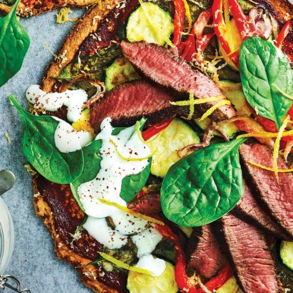

GLUTENFREE

Middle Eastern lamb pizza
A gluten-free slice of spice - this delicious lamb pizza is ready in only 20 minutes and is high in iron and low in saturated fat.
Serves: 4
Time to make: 20 mins
Hands-on time: 8 mins
Nutrition Info (per serve)
Calories : 422cal
Kilojoules : 1766kJ
Protein : 36.4g
Total fat : 8.4g
Saturated fat : 3.1g
Carbohydrates : 45.4g
Sugars : 13.8g
Dietary fibre : 7.5g
Sodium : 654mg
Calcium : 278mg
Iron : 4.9mg
Ingredients
11oz lamb backstrap
1 teaspoon sumac, plus
½ teaspoon extra to serve
2 x 5oz gluten-free pizza bases
¹⁄³ cup no-added-salt tomato paste
2oz baby spinach leaves, plus
2oz extra to serve
2 small courgettes, thinly sliced
½ red onion, thinly sliced
1 red capsicum, thinly sliced
Instructions
1. Preheat oven to 375°F. Sprinkle lamb evenly with sumac. Heat a large non-stick frying pan over medium-high heat. Add lamb and cook for 2–3 minutes each side or until cooked to your liking. Transfer to a plate. Rest for 3 minutes before thinly slicing.
2. Place pizza bases on 2 large baking trays. Spread evenly with tomato paste, then top with spinach, courgettes, onion, capsicum and cheese. Bake, swapping trays halfway through cooking, for 12 minutes or until pizzas are golden. Top with lamb.
3. Meanwhile combine yoghurt with extra sumac. Dollop onto pizzas, then serve topped with extra spinach and lemon zest.